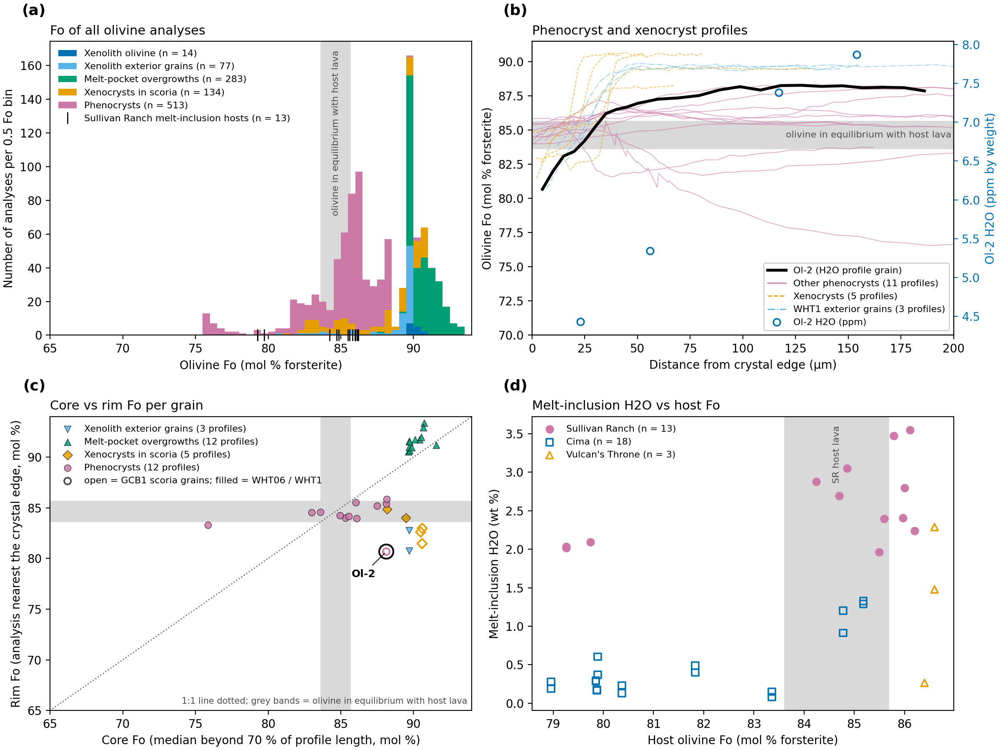
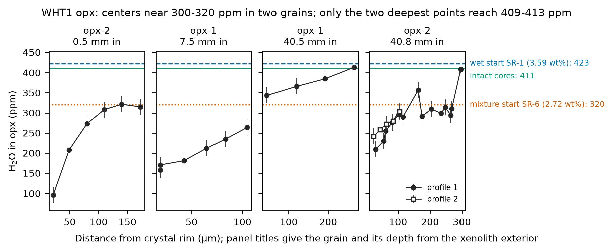
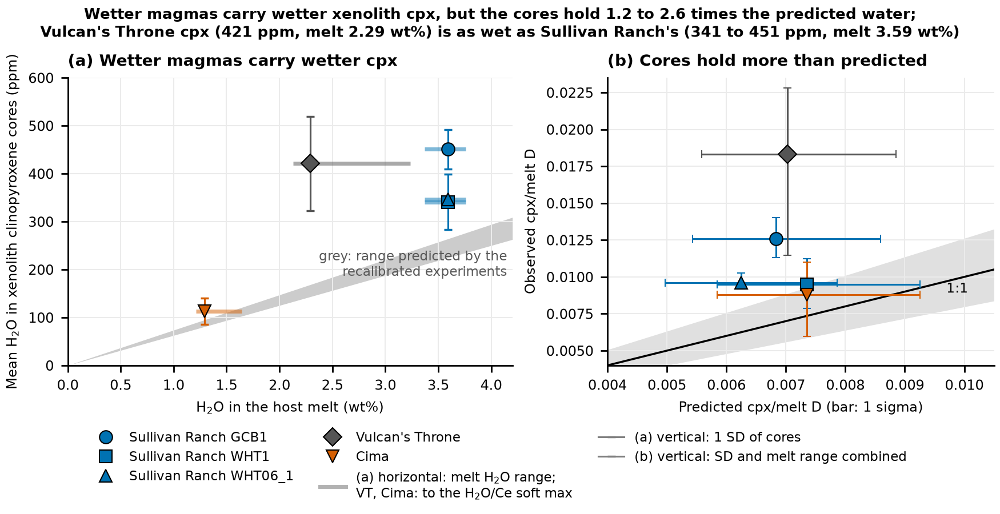

9 Stage I: ascent in water-undersaturated magma
Stage I runs from xenolith pickup at about 1.15 GPa to the depth where the melt starts to lose water. The magma is H2O-undersaturated throughout (the MiMiC model melt saturates at 682 MPa and still holds 99 % of its H2O at 585 MPa), so H+ can move freely between melt and mineral. This chapter asks whether the xenolith minerals used that time to equilibrate with the host. Three tests bear on it: the olivine cores and the time the crystals spent in the melt, the starting levels of the intact orthopyroxene (opx) interiors, and the clinopyroxene (cpx) core water against the water in each magma.
9.1 Do the olivine cores equal the phenocrysts, and was there time?
Cores. The xenolith olivine cores in the GCB1 interior hold 4.3–8.7 ppm H2O (mean 6.89, n = 8) and those at the exterior 4.8–7.7 ppm (mean 5.95, n = 9). The scoria phenocryst cores hold 5.9–7.9 ppm (mean 6.77, n = 5). Interior and exterior xenolith groups do not differ statistically (Welch t = 1.38). Olivine inside the xenolith therefore carries the same water as olivine that grew in the host magma, which is what full equilibration with the host predicts. The check has limited power: n is small and the olivine cores have also lost water during Stage II (Chapter 8), so it shows that the cores share a history with the phenocrysts, not what that history was before degassing.
Time. Several clocks say there was ample time before the magma began to degas. Conduction heats a 65 mm radius xenolith in about 2 h. Hydrogen in the slowest phase, a 0.5 mm cpx, needs about 7 h at 1200 °C to reach a flat profile. The Fe–Mg profiles of olivine give residence times in the carrier of hours to weeks (Table 9.1), against a final ascent recorded by H of about 1.6 h from 585 MPa at 0.100 MPa/s.
| Olivine grain | Locality | Fe–Mg time (days) | 1σ range (days) | Starting profile |
|---|---|---|---|---|
| Ol-2 (phenocryst) | Roadside | 18.4 | 15.7–21.3 | Two steps (rim, shoulder); edge held at Fo 79.7 |
| ol6, profile 1 (xenocryst) | Roadside | 0.15 | 0.10–0.21 | Archived setup |
| ol6, profile 2 (xenocryst) | Roadside | 0.21 | 0.18–0.23 | Archived setup |
| ol23 (xenocryst) | Roadside | 0.37 | 0.32–0.42 | Archived setup |
| ol43 (xenocryst) | Pit | 1.9 | 1.5–2.4 | Archived setup |
| ol48 (xenocryst) | Pit | 3.0 | 2.8–3.3 | Archived setup |
Table 9.1 shows that even the shortest record, 0.15 d (3.6 h), exceeds the 1.6 h of H-recorded ascent by 2.2×. Ol-2 spent 18.4 d in the carrier, with its edge held at Fo 79.7, the rim value of its backscattered-electron (BSE) gray profile scaled to the EMPA Fo; the three starting profiles tested span 14–33 d (Section A.10). These are residence times in the carrier melt, so they bound the time available for exchange but not the length of Stage I itself.
Two pulses. The Fo data (Figure 9.1) show that the crystals in the scoria did not all come from one melt. The pit phenocryst rims reach Fo 83.3–85.8 (median 84.5), in equilibrium with the host lava (Fo 83.6–85.7). The roadside rims end 1–4 Fo units lower (Ol-2 at 80.7, ol6 at 81.5–82.6, ol23 at 83.0) and need a melt with 6.6–8.6 wt% MgO. Residence times differ in the same direction: 0.15–0.37 d for the roadside xenocrysts, 1.9–3.0 d for the pit xenocrysts. The roadside inclusions are also drier (1.96–2.80 against 2.41–3.55 wt% H2O) and lower in Cl/K2O. Two pulses of magma probably fed the two sampling sites. No measured inclusion records the final roadside melt, so the starting H of Ol-2 is not directly known (Chapter 11).

The olivine says the minerals had time and the same history as the host. Whether they ended at the host’s water level depends on what the opx interiors hold.
9.2 What do the opx interiors say about the starting water?
The ascent-rate fits need a starting level for the grains before water loss began. The best anchor is the interior of the large WHT1 opx, which sat 40 mm inside the xenolith, far from the degassing exterior.
The picture is less tidy than “intact cores at 411 ppm” (Figure 9.2). Two of the five traverses, the exterior opx at 0.5 mm and the interior opx-2 at 40.8 mm, flatten near 300–320 ppm. Only the two deepest single points reach 409–413 ppm. The interior opx-1 rises steadily to 413 ppm with no plateau. For the exterior grain, a flat 315–321 ppm center is no evidence of the start: the joint fit reproduces it as loss from a 423 ppm start that reached the middle of this small grain (χ² 0.9). The interior opx-2 grain is different. A 300 ppm shelf with a 409 ppm point behind it cannot come from one starting value diffusing inward, so this grain was probably zoned before the final water loss.

Two fits disagree about which level to use. The rate model, fitted to the exterior opx and cpx, fits with the MiMiC melt (3.549 wt% H2O): joint χ² 20.0 isothermal, against 41.5 for the mixture start (SR-6, 2.72 wt% H2O; computed with the CO2/Nb start). The exchange model, fitted to all five WHT1 traverses with one common start, prefers the lower level: χ² 104 at 321 ppm against 154 at 411 ppm. Nearly all of that difference is one traverse, interior opx-2 profile 1 (χ² 64 against 106). When each traverse may choose its own start, the values scatter from 215 ppm to the 600 ppm bound, so no single common start fits every interior grain.
The two levels can be read in two ways, and the data do not choose between them.
- K uncertainty. A 300–320 ppm start in the MiMiC melt (3.549 wt%) needs K of 85–90 ppm per wt% (84–89 for the CO2/Nb start, 3.59 wt%), an opx/melt D of about 0.009 and 25 % below the Novella-anchored value (117.7). The experimental range is 0.009 to about 0.019 (K about 90–190), so both levels lie inside it.
- Starting-H2O uncertainty. With K = 117.7 ppm per wt%, the plateaus equal the mixture batch (2.72 wt%) and the deepest points the wet batch (3.49 wt%, against 3.549 wt% in the MiMiC melt and 3.59 wt% in the CO2/Nb start). Both are measured Sullivan Ranch melts.
We keep the MiMiC start for the rate because the exterior grains that record the rate fit it best. The interior grains started heterogeneous, which fits grains that last equilibrated with different batches. Either reading removes a single clean “intact core” anchor.
The opx cores thus point to a melt of 2.7–3.5 wt% H2O, in the range of the Sullivan Ranch inclusions. The cpx cores add a test across volcanoes.
9.3 Do cpx cores track the water in their magmas?
Cpx is the slowest phase, so it is the strictest test. We compared the cpx core water with that of the melt at each volcano, using the cpx/melt partition coefficient D from the experiments of O’Leary et al. (2010). Equation 10 of that paper was refit to 28 experiments recalibrated onto the SIMS scale of Towbin et al. (2023), with tetrahedral Al excluding the Cr-Tschermak component (residual σ 0.21 in ln D).
Wetter magmas carry wetter xenolith NAMs, with one outlier. Cima, the driest magma (1.29 wt% H2O), holds the driest cpx (113 ppm). The Sullivan Ranch cores (341–451 ppm) sit in the wettest magma. Vulcan’s Throne cores (421 ppm) are as wet as Sullivan Ranch’s in a drier magma (2.29 wt%), so the ordering holds only partly (Figure 9.3).
The cores hold 1.2–2.6× what the experiments predict (Table 9.2). Against the maximum melt H2O of each volcano, Cima and WHT1 sit within 1σ, WHT06_1 is 1.7σ off, GCB1 2.5σ and Vulcan’s Throne 2.7σ. The cpx diffusion fits agree independently: started from the experiment-based K, they pull K up by 1.6–1.9×, which means a cpx/melt D of about 0.011–0.016. The opx row differs because its K is anchored to the opx cores, so a ratio near 1 is by construction.
| Phase and group | Core H2O (ppm) | Observed D | Predicted D | Observed ÷ predicted | Melt H2O needed (measured), wt% |
|---|---|---|---|---|---|
| Cpx, Sullivan Ranch GCB1 | 451 | 0.0126 | 0.0068 | 1.84 | 6.6 (3.34–3.76) |
| Cpx, Sullivan Ranch WHT1 | 341 | 0.0095 | 0.0073 | 1.29 | 4.6 (3.34–3.76) |
| Cpx, Sullivan Ranch WHT06_1 | 346 | 0.0096 | 0.0063 | 1.54 | 5.5 (3.34–3.76) |
| Cpx, Vulcan’s Throne | 421 | 0.0183 | 0.0070 | 2.61 | 6.0 (2.13–3.23) |
| Cpx, Cima | 113 | 0.0088 | 0.0074 | 1.20 | 1.5 (1.21–1.94) |
| Opx, WHT1 (anchor) | 411 | 0.0114 | 0.0118 | 0.97 | 3.49 (3.34–3.76) |

Four readings could explain the excess, and none has been tested. The cores may have kept some pre-entrainment water, though the clocks above argue against it. The melt may have held more water than the inclusions record. The cpx/melt D may be higher at these conditions, for example rising as melt H2O falls, as for olivine. Or the recalibration of the experiments may be off (the Cr-rich Hauri set has no recalibrated values, and Aubaud 2004 sits 1.5× above the others). The Cr-Tschermak argument does not rescue the match: removing the Cr-Tschermak Al shifts D by 3–7 %, and explaining Vulcan’s Throne against Cima would need a Cr coefficient of −42 per apfu, outside what the experiments allow.
This revises a conclusion of the earlier chapter, which called the agreement quantitative. That comparison set recalibrated xenolith D against uncorrected experimental D. On a common scale the qualitative result stands (drier magma, drier cpx) and the quantitative one weakens. The pyroxene diffusion fits already use the opx-anchored cpx K, which agrees with what the cpx data choose, so the rate does not depend on the experimental D. Cpx cores therefore track the water of their host magma in order and within a factor of 1.2–2.6 in amount.
Together the three tests say that the minerals had time, and that their water follows the host melt. What that leaves of the mantle’s water is the question of the next chapter.
Sources: Fe–Mg residence and Fo populations (results/olivine_femg_ol2/, data/olivine_fo_populations/grains.csv); opx start levels (figures/opx_start_levels.csv, summary workbook sheets Other_Timescales and Magma_Models); cpx partitioning (summary workbook sheet Magma_Models, block C).